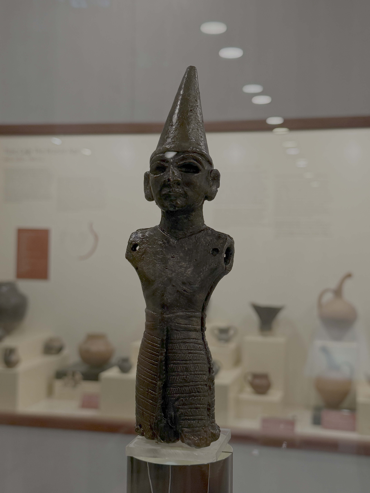

Amasya Müzesi
8 Haziran, 2026Amasya Müzesi müze olma yolculuğuna 1925 yılında 2. Beyazıt külliyesinin medrese binasında müze deposu olarak başlamıştır. Eserler 1962 yılında Gök Medreseye taşındıktan sonra 1977 yılında güncel binasına taşınarak 1980 yılında ziyarete açıldı.
Müze Geç Neolitik çağdan başlayarak Erken Kalkolitik, Tunç Çağı, Hitit, Urartu, Frig, İskit, Pers, Helenistik, Roma, Bizans, Seçluklu ve Osmanlı dönemine ait geniş bir spektrumda eser sunmaktadır.
Müzenin öne çıkan eserleri arasında Hitit döneminden bronz Fırtına Tanrısı Teşup, ilhanlı dönemine ait Müslüman mumyalar salonu ve Roma dönemine ait Elmalı Mozaik yer almaktadır. [1,2]
Teşup Heykeli
1962 yılında Amasya’nın Doğantepe Köyü’nde tesadüfen bulunan Teşup Heykeli, Hititlerin Fırtına Tanrısı’nı betimleyen önemli bir eserdir. Bulunduğu Doğantepe Höyüğü, Geç Neolitik Çağ’dan Osmanlı dönemine kadar kesintisiz yerleşim görmüş bir bölgedir. Arkeoloji literatüründe “Amasya Heykelciği” olarak da bilinen bu eser, Hititlerin Yukarı Ülkesinde yer alan antik Hakmiş kentindeki bir tapınağa ait olabileceği düşünülmektedir. Teşup Heykeli, Amasya’nın Hitit dönemine uzanan köklü tarihinin simgesidir. [3]

Teşup Heykeli
Mumyalar
Mumya salonunda sergilenen mumyalar dönemin Anadolu nazırlığında görev alan yöneticiler ve ailelerine ait olması bu salonun öne çıkan bir özelliğidir. Mumyalar; Anadolu Valisi Şehzade Cumudar, Amasya Emiri İşbuga Noyan, İzzettin Mehmet Pervane ile onun cariyesi, erkek ve kız çocuklarına aittir. Bu mumyalar, Burmalı Minare Camii ve Fethiye Camii’ndeki türbelerden getirilmiştir. Eski Mısır’daki mumyalama yöntemlerinden farklı olarak, bu mumyaların iç organları çıkarılmadan korunmuş olması, onları ilk Türk ve Müslüman mumyalar arasında özel bir konuma yerleştirmektedir.[4]

Mumyalar
Elmalı Mozaik
2013 yılında Amasya’nın Yavru köyü yakınlarında keşfedilen 1.700 yıllık Roma dönemi mozaiği, dünyada misket elması ağacının işlendiği tek antik mozaik olarak dikkat çekiyor. Eser, ortasında elma ağacı, dört elma ve üç keklik figürüyle Amasya elmasının antik çağlardan beri değerli bir meyve olduğunu gösteriyor. [5]

Elmalı Mozaik
Ayrıca müzede şehirde bulunan deniz canlısı fosilleri, geç Osmanlı dönemine ait Meryem ana büstü ve etnografik parçalar da yer almaktadır.
Kaynakça
- [1] Amasya Müzesi. (n.d.). muze.gov.tr. Retrieved October 24, 2025, from https://muze.gov.tr/muze-detay?sectionId=AMS01&distId=MRK
- [2] Amasya Müzesi -. (n.d.). Amasya İl Kültür ve Turizm Müdürlüğü. Retrieved October 24, 2025, from https://amasya.ktb.gov.tr/tr-59513/amasya-muzesi.html
- [3] AMASYA MÜZESİ. (n.d.). Kültür Varlıkları ve Müzeler Genel Müdürlüğü. Retrieved October 24, 2025, from https://kvmgm.ktb.gov.tr/Eklenti/90828,amasya-muzesipdf.pdf?0
- [4] AMASYA ARKEOLOJİ MÜZESİ. (n.d.). Kültür Portalı. Retrieved October 24, 2025, from https://www.kulturportali.gov.tr/turkiye/amasya/gezilecekyer/amasya-arkeoloj-muzes
- [5] Amasya'daki 1.700 yıllık elmalı mozaik dünyadaki tek örnek. (2024, August 20). Euronews.com. Retrieved October 24, 2025, from https://tr.euronews.com/kultur/2024/08/20/amasyadaki-1700-yillik-elmali-mozaik-dunyadaki-tek-ornek